Інтер'єр. Необарокко
Барочним цей інтер'єр я назвав умовно, бо в ньому присутні елементи інших стилів. Починався цей проект спільно зі студією "Солсбері", закінчував я його один. Зрозуміло, будь-який об'єкт такого роду є плодом спільної праці багатьох людей, починаючи з господарів і закінчуючи дизайнером. В даному випадку багато ідей належать саме замовнику.
Моїм завданням було звести все це в єдину, гармонійну систему.
Не повний, на жаль (зв'язки з багатьма не збереглися), список тих, хто брав участь у цьому проекті:
Хочу окремо відзначити чесну та якісну роботу майстра на всі руки, Сергія Потапова (загальнобудівельні, сантехнічні та багато інших видів робіт). Я дуже радий, що випадок звів нас. Олександр Собко здійснював координацію всіх учасників будівництва, а також виготовлення декоративної штукатурки. Розпис у ванній — Ірина Ганіна, а в спальні — Валерій Васильєв.
Вони ж, і Олена Солодянікова займалися тонуванням ліпнини. Тонка і кропітка робота.
Ліпнину виготовила творча скульптурна майстерня Сергія Юхно і Василя Мікропуло. Їх фірма "Обеліск" робила камін та інші вироби з мармуру. Нестандартні меблі, двері, дерев'яні грати — "Woodline". Штори — "AVE SOL". Паркет — "Паркетний світ". Прекрасний вітраж для дверей у вітальні зроблений за ескізами художника Павла Гребенюка.
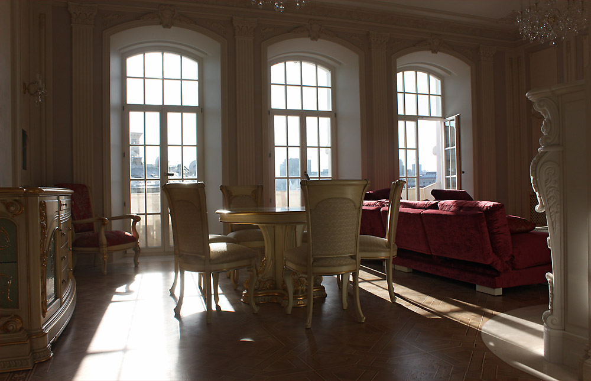
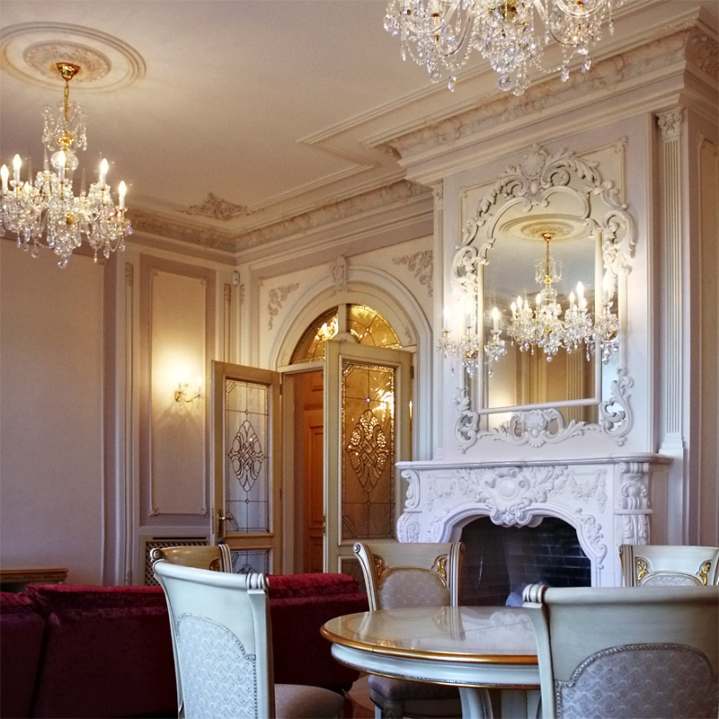
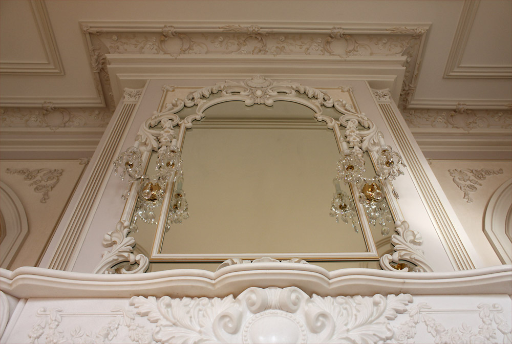
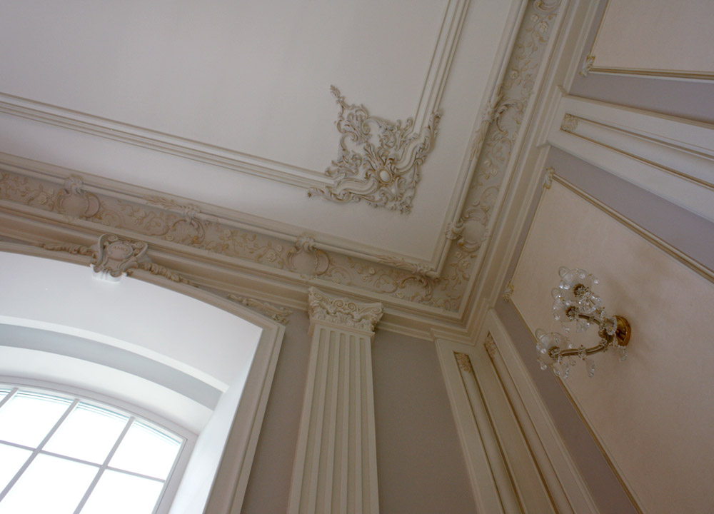
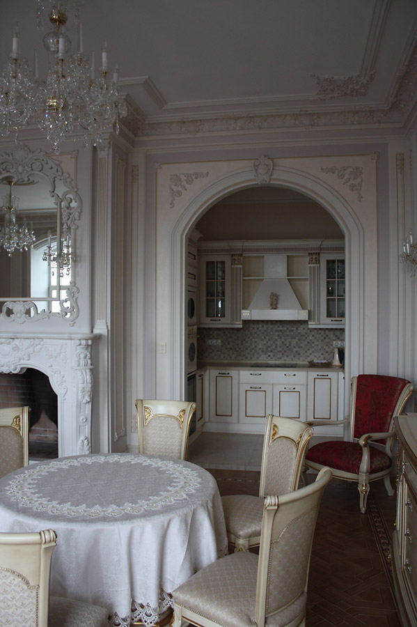
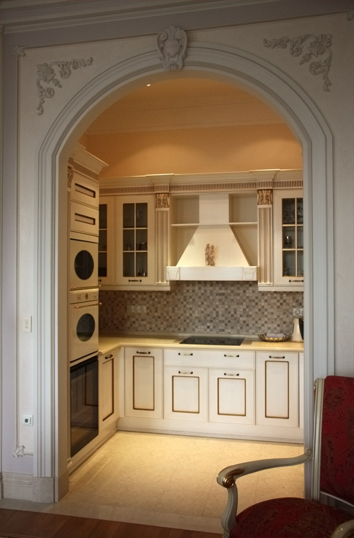
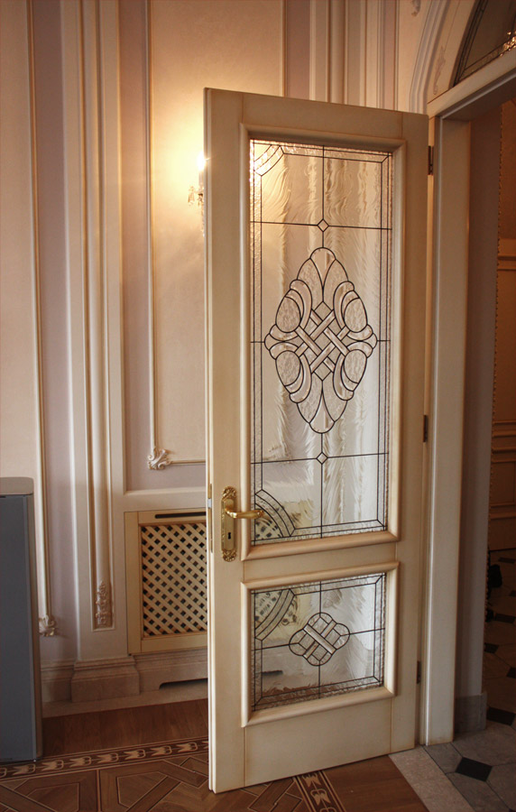
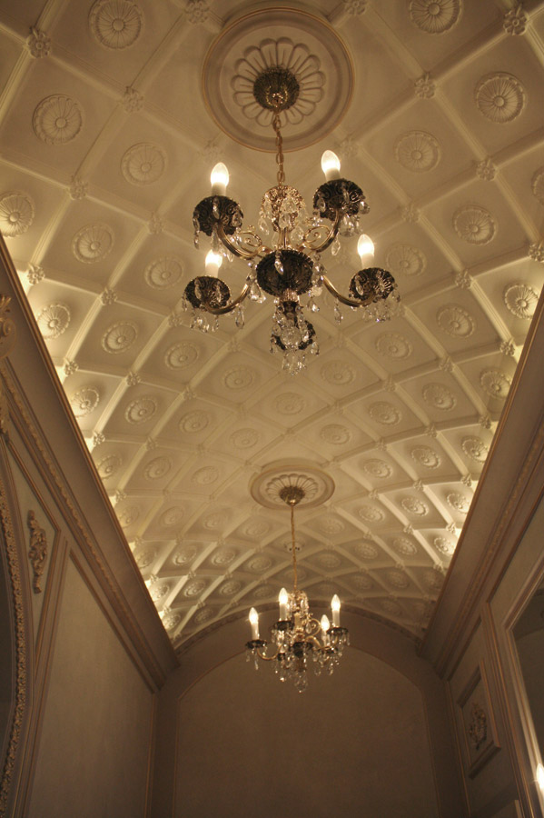
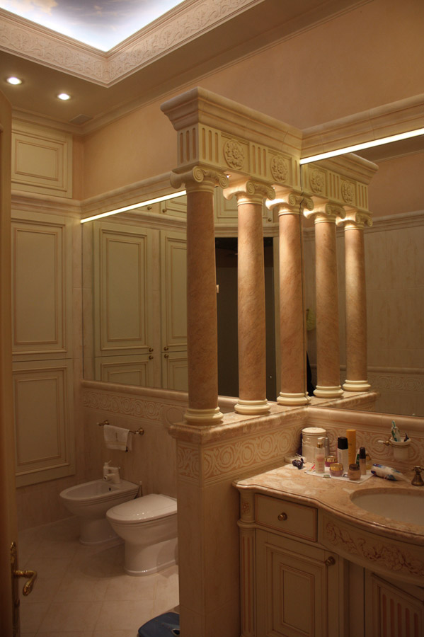
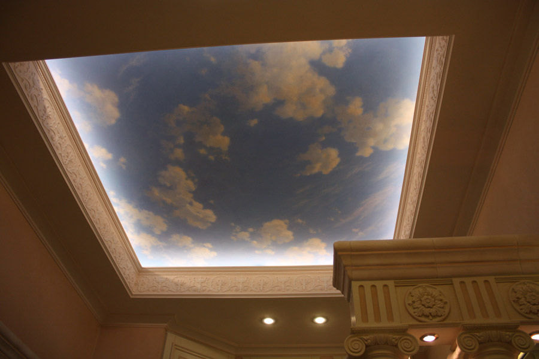
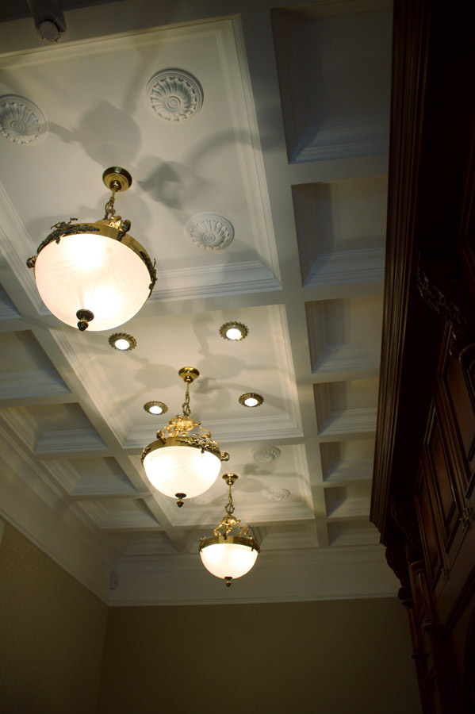
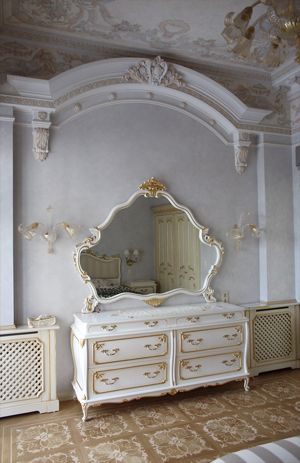
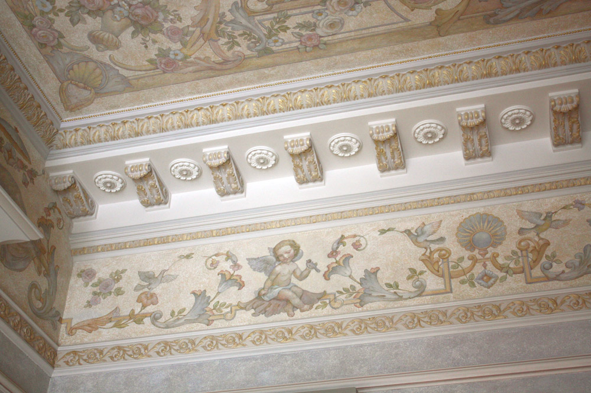
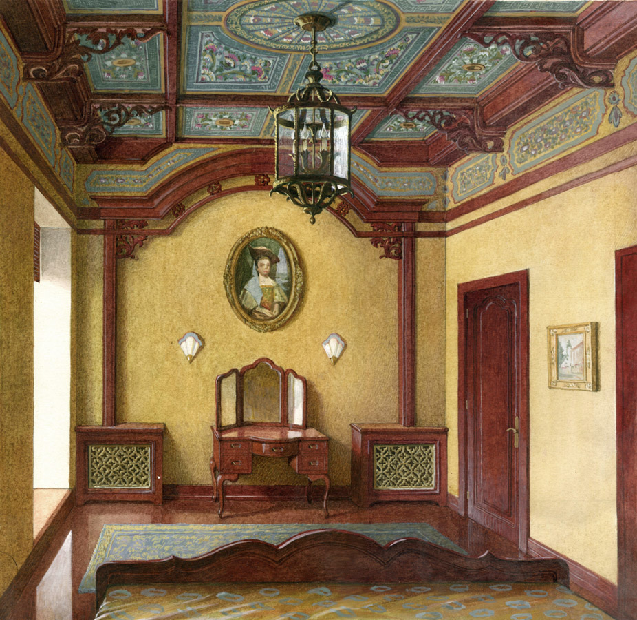
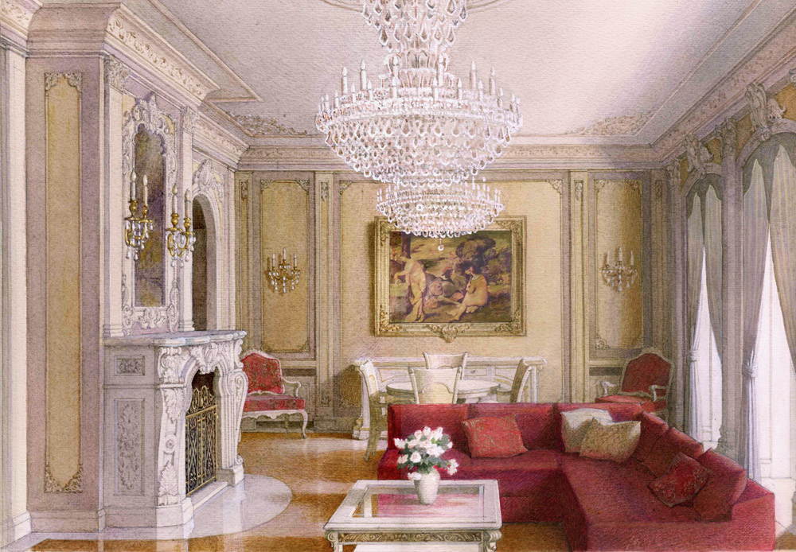
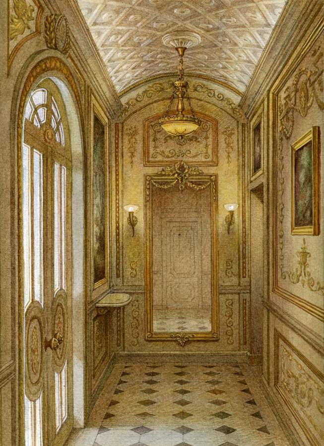